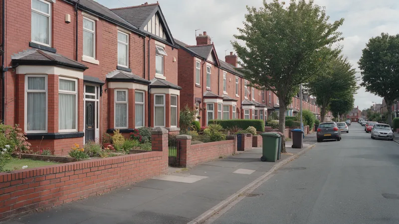

Sample coverage
Drainage in Southport.
Blocked drains and toilets, camera surveys, repairs and relining, soakaways, gullies and septic tank pipework in Southport and round about. Southport is a real town. Culvermill Drainage is not a real firm, and this is sample coverage for a demo site.
What we get called to in Southport
Mostly the same two things as everywhere: a run that has blocked, and a run that keeps blocking. What changes from town to town is why. In Southport it tends to be big older houses with long back runs, and a lot of gullies that have not been lifted in years.
So a visit here usually starts the same way. Covers up from the house outwards, find the chamber that is full, clear it from the low end, jet the run back to full bore, then a camera down it so you can see whether the pipe had anything to do with it.
Shared runs and boundaries
Older streets round here are full of back runs serving several houses, and that matters because a shared run, or any run past your boundary, is normally the water company's to deal with rather than yours. If that is where we think the blockage is, we will say so before anybody starts work and point you at them instead.
It is a short conversation and a job we do not get. It is still the right answer, and it saves people paying for a clearance somebody else would have done.
Getting to you
We are based in Merseyside Sample and Southport is on the list of towns we cover most. We are not going to print a response time, because that would be an invented figure on a demo site. Ring and you will get a straight answer about today or tomorrow.

Generated photoGenerated for this demo. Not a photograph of Southport.
In Southport
What we would come out for.
Blocked drains and toilets
Rodded, jetted and running again, then a look down it to see what caused it. Most of what we pull out is wipes, fat or roots.
More →Drain camera surveys
A camera down the run so you can see the inside of the pipe instead of guessing. Footage and a plain written report after.
More →Drain repairs and relining
Cracks, open joints and roots put right from inside the pipe where we can, with a patch or a liner cured in place.
More →Soakaways and land drainage
Rainwater taken away from the house and the lawn. We test what the ground actually does before anybody prices the dig.
More →Gully and gutter outlet clearing
The silt out of the gully pot and the outlet flushed through, so the downpipe stops running down the wall.
More →Septic tank and cesspit help
The drainage side of it: the runs in and out, the chambers and the condition of the pipework. Emptying is a tanker job.
More →Nearby
The other towns on the list.
- St HelensDrainage in St Helens
- PrescotDrainage in Prescot
- MaghullDrainage in Maghull
- FormbyDrainage in Formby
Sample coverage for this demo.
Drain playing up in Southport?
Tell us what it is doing and your postcode and we will book someone in. If waste water is coming up now, use the urgent line.